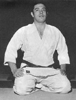

柔道 | JDP
Budō Lineage Tree
Fernando Costa Matos
PRT
*
1941
Ponta Delgada
Portugal - †
Open in tree
ID page
Source YAML

Teachers
Kobayashi Kiyoshi
->
Fernando Costa Matos
小林清
(
Kōdōkan Jūdō
)
Kobayashi Kiyoshi
->
Fernando Costa Matos
小林清
(
Kōdōkan Jūdō
)
Students
Fernando Costa Matos
->
Nuno Delgado
Fernando Costa Matos
->
António Roquette de Andrade
Rank
Kōdōkan Jūdō
講道館柔道
:
9 dan
(
Federação Portuguesa de Judo
)
Sources
https://correiodosacores.pt/NewsDetail/ArtMID/383/ArticleID/31195/%E2%80%9CA-not237cia-de-que-iria-aos-Jogos-Ol237mpicos-foi-um-pouco-inesperada-mas-recebida-com-emo231227o-e-alegria%E2%80%9D
http://www.fpj.pt/wp-content/uploads/2019/12/19ci344-Premiados-na-Gala-do-60%C2%BA-Anivers%C3%A1rio-da-FPJ.pdf
https://judolandia.tripod.com/costamatos-bi.htm
https://judomagazine.pt/2023/05/16/entrevista-viagem-ao-mundo-dos-homens-bons-2/
https://judomagazine.pt/2023/04/30/entrevista-fernando-costa-matos-um-velejador-navegador-de-judogi/